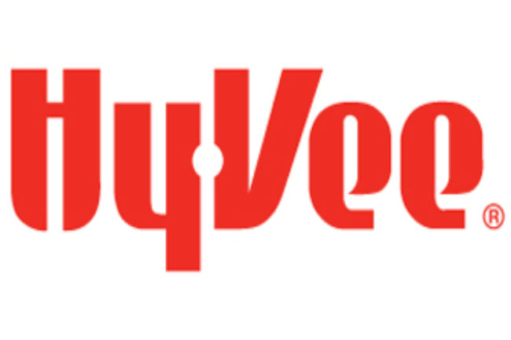
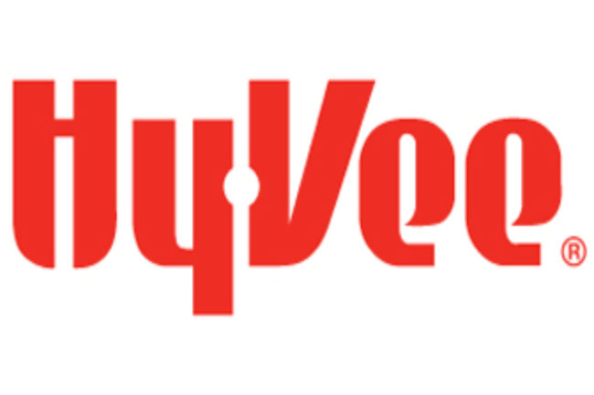

Education
-
Indian Hills Community College - Ottumwa, IA
Computer Software Development, 2023-2024
2 year program.
-
Indian Hills Community College - Ottumwa, IA
Associate's Degree Marketing, 2016-2017
2 year program.
-
Buena Vista - Ottumwa, IA
Master's Degree in Business Management Administrator, 2017-2021
4 Year program started right after my 2 year at Hills.
Work Experience
IT Student Specialist
Indian Hills Community College
September 2023 - Present
Manage and maintain the company's IT infrastructure, including hardware, software, and networks.
Key responsibilities:
- Provide technical support to employees for hardware, software, and network-related issues.
- Install, configure, and update software applications and operating systems.
- Ensure data security and privacy by implementing appropriate security measures.
- Manage backups and disaster recovery procedures to minimize data loss and downtime.
Marketing Coordinator
Local Marketer
March 2021 - 2022
Plan and execute marketing campaigns to promote products and services for clients.
Key responsibilities:
- Create and manage content for various marketing channels, including social media, email, and websites.
- Analyze market trends and customer behavior to identify target audiences and optimize marketing strategies.
- Coordinate with internal teams and external partners to execute marketing initiatives and achieve business objectives.
- Track and analyze campaign performance using analytics tools to measure ROI and effectiveness.